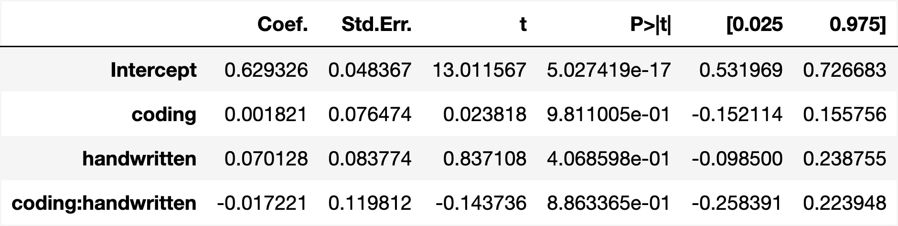
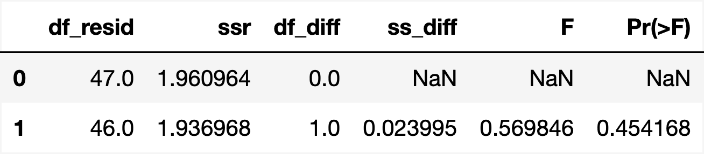
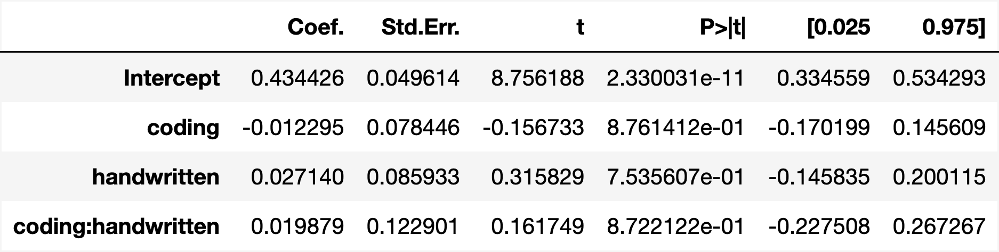
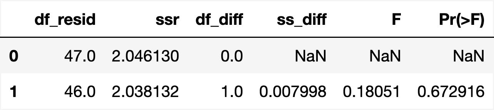
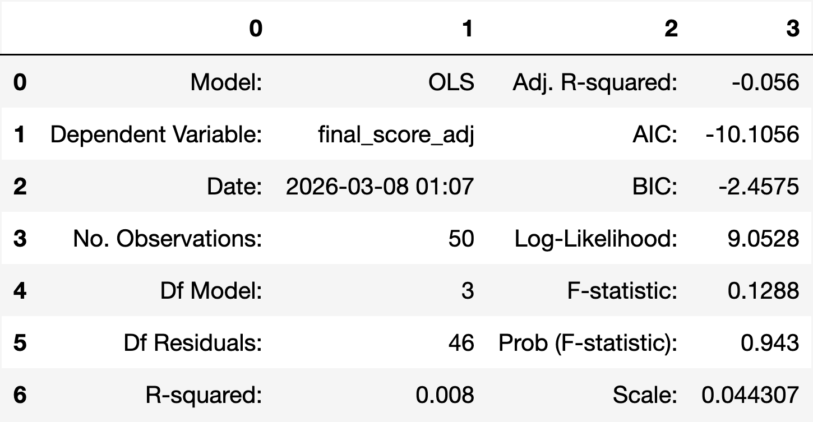
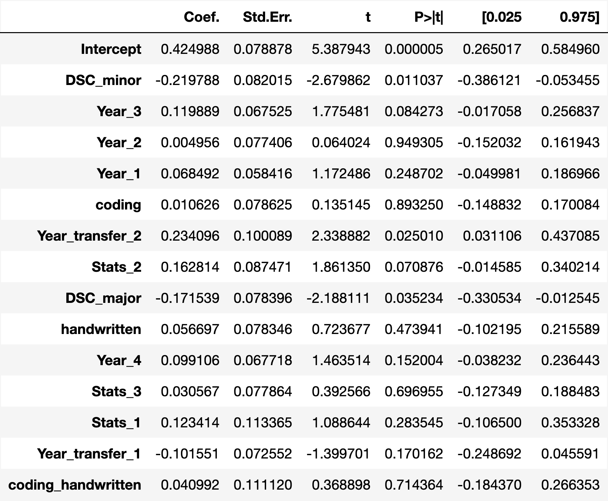

DSC 180 Capstone Project
Simulation Coding Exercises for Teaching Probability Theory
Motivation
Probability is a core part of modern STEM education and everyday decision-making, yet many people find it confusing and unintuitive. Students often struggle with ideas like conditional probability, rare events, and long-run behavior: they may be able to plug numbers into formulas, but still feel unsure about what those formulas mean in real situations. This matters because probabilistic reasoning shows up in many important contexts, such as interpreting medical tests, evaluating risks, or judging the strength of data-driven claims.
Research Goal
Traditional probability courses tend to emphasize symbolic derivations and hand-written problem sets, which build algebraic skills but do not always help students develop a clear mental picture of random processes. In contrast, statistics and data science courses have increasingly adopted simulation-based, coding-centered approaches, where learners write short programs, generate many samples from a model, and use plots and summaries to “see” theoretical ideas in action.
This difference motivates the need for careful, classroom-based evaluation of how coding and simulation actually affect students’ conceptual understanding of probability, beyond anecdotal enthusiasm or small, topic-specific case studies. Our project directly addresses this gap. We designed simulation-based coding exercises for several key probability topics and embedded them in a four-condition, full-factorial experiment that compares a control group, a coding-only group, a handwritten-only group, and a coding+handwritten group.
Within this design, we ask two related questions: (i) whether access to coding activities, in any form, leads to additional learning gains beyond traditional materials alone, and (ii) whether combining coding with handwritten work yields benefits beyond using either modality by itself.
Participants and Recruitment
We recruited participants from Data Science, Math, and Economics classes at UCSD. Data collection took place during the first half of winter quarter. Selection of these courses aimed to target students with comparable quantitative backgrounds, ensuring a similar baseline level of mathematics and coding skills for completing the tasks in our study.
We conducted participant outreach through class announcements and emails distributed through the professors of each respective course. Students who chose to participate were first asked to complete an intake form administered through Google Forms. Background information such as name, email address, data science affiliation, math affiliation, class standing, related coursework, and self-reported familiarity with statistics, Python, and Chebyshev’s inequality was collected from each participant.
Study Design
Our study employs a four-condition, full-factorial design to compare the effectiveness of different instructional approaches. The four treatment groups are as follows:
- No coding, no handwritten
- Coding only
- Handwritten only
- Coding + handwritten
Participants were randomly assigned to one of the four conditions, ensuring that each group had a comparable mix of students from different backgrounds and courses. Materials were administered through Gradescope, and all content focused on the topic of Chebyshev’s inequality, a concept that approximately 60% of students reported not being familiar with. Each participant took a final assessment after completing their assigned tasks, producing a quantitative score that served as the primary outcome variable for evaluating differences in learning outcomes across treatment conditions.
Exploratory Data Analysis
Before fitting formal statistical models, we examined the score distributions and overall performance patterns across instructional groups. These exploratory views provide context for the later regression and ANOVA results by showing the relative spread, central tendency, and consistency of student outcomes under each treatment condition.
Feature Construction
In addition to treatment assignment, we considered intake-form variables describing student background and prior preparation. These features allow us to investigate whether differences in adjusted final score are better explained by instructional condition alone or by a broader set of student characteristics.
Main Findings
This section presents the primary results for both raw final scores and confidence-adjusted final scores. Exploratory plots show modest differences across groups, while the formal statistical tests suggest that these differences are not statistically significant under the current sample.
Raw Final Score
The raw final score results show modest visual differences across groups, but the formal analyses do not detect statistically significant effects.

Distribution of raw final assessment scores across the four instructional groups.
Groups with structured engagement activities appear to perform slightly better overall, although the differences remain modest.
Interaction Effect Test
H0: β3 = 0 | Model: β0 + β1(coding) + β2(handwritten) + β3(coding × handwritten)

Coefficient estimates for the raw final score model.
The interaction term is not statistically significant, suggesting no measurable additional benefit from combining both activities.
Equal-Effect Comparison: Coding vs. Handwritten
H0: β1 = β2 | Reduced model: β0 + β1(coding + handwritten) + β3(coding × handwritten)

ANOVA comparison between the full and reduced raw-score models.
The result suggests no meaningful difference between the estimated effects of coding and handwritten exercises on raw final score.
Confidence-Adjusted Final Score
The adjusted final score results follow a similar pattern, with slightly lower scores overall after accounting for confidence.
 by Group.png)
Distribution of confidence-adjusted final assessment scores across the four groups.
The adjusted scores are generally lower than the raw scores, but the overall group pattern remains similar.
Interaction Effect Test
H0: β3 = 0 | Model: β0 + β1(coding) + β2(handwritten) + β3(coding × handwritten)

Coefficient estimates for the adjusted final score model.
The interaction effect remains not statistically significant after accounting for confidence.
Equal-Effect Comparison: Coding vs. Handwritten
H0: β1 = β2 | Reduced model: β0 + β1(coding + handwritten) + β3(coding × handwritten)

ANOVA comparison between the full and reduced adjusted-score models.
The result again suggests no meaningful difference between the effects of coding and handwritten exercises.
Interpretation and Discussion
This section interprets the main patterns observed in the study beyond the formal hypothesis tests. Overall, the results suggest only modest differences across sections, while the adjusted-score analysis and the intake-feature model provide additional insight into how students performed and evaluated their own understanding.
Why Confidence-Adjusted Scores Matter

Calibration by section: mean score generally increases with reported confidence.
Students who report higher confidence also tend to be more likely to answer correctly, suggesting that confidence contains useful information about calibration and self-evaluation.
This pattern helps explain why the adjusted score is useful in addition to the raw score. The raw score captures correctness alone, while the adjusted score also reflects whether confidence is aligned with correctness. In this sense, the adjusted score provides a broader view of student understanding by incorporating an element of self-evaluation rather than correctness alone.
Added Value of Intake Features
To better understand variation in adjusted final score, we compared the original adjusted-score model based only on section-related terms with a richer model that also incorporates intake-form variables. This comparison helps show whether student background characteristics explain additional variation in performance.

Baseline adjusted-score model using only section-related predictors.
This baseline model has limited explanatory power, with R-squared = 0.008 and adjusted R-squared = -0.056.
Expanded adjusted-score model including intake-form variables.
After adding intake-form variables, the model fit improves substantially. R-squared increases to 0.444 and adjusted R-squared increases to 0.243.
Comparing these two models suggests that intake-form variables add meaningful explanatory value. The adjusted R-squared increases from -0.056 to 0.243, while the R-squared increases from 0.008 to 0.444. The overall model significance also improves, with the Prob(F-statistic) dropping from 0.943 in the baseline model to 0.0305 in the intake-feature model. Taken together, these results suggest that student background characteristics explain adjusted final score more effectively than section assignment alone.

Coefficient estimates for the adjusted-score model with intake features.
The coefficient table shows how section indicators and intake variables relate to adjusted final score. The feature guide below explains the shortened variable names used in the model output.
Feature Name Guide
The coefficient table uses shortened variable names. The groups below explain what each label refers to.
Activity Terms
coding: students in sections with coding exercises
handwritten: students in sections with handwritten exercises
coding_handwritten: interaction term for students assigned both activities
DSC Affiliation
DSC_major: students who reported being a Data Science major
DSC_minor: students who reported being a Data Science minor
Academic Year
Year_1: first-year students
Year_2: second-year students
Year_3: third-year students
Year_4: fourth-year students
Year_transfer_1: third-year student, first-year transfer
Year_transfer_2: fourth-year student, second-year transfer
Statistics Background
Stats_1: taken at least one introductory statistics course
Stats_2: advanced introductory probability or statistics course
Stats_3: basic introductory probability or statistics course
Reference group: no reported background in this category
Overall, the coefficient table suggests that student background characteristics contribute more to explaining adjusted final score than section assignment alone. Academic year, prior statistics preparation, and DSC affiliation appear more informative than the section-based indicators, while the coding, handwritten, and interaction terms remain relatively small. This is consistent with the earlier results, where section-based differences were present descriptively but remained modest in magnitude.
Study Limitations
Several limitations should be considered when interpreting these findings. First, the sample size was relatively small, which limits the ability to detect subtle differences across instructional conditions. Second, the assessment combined different types of probability tasks, so advantages from one learning mode may have been diluted when all questions were aggregated into a single overall score.
In addition, confidence reporting likely varies across students. Some students may use the confidence scale more aggressively, while others may report confidence more conservatively. As a result, the adjusted score is informative and useful for discussion, but it is also influenced by differences in how students evaluate and report their own certainty.
Key Takeaways
This study explored the efficacy of simulation-based coding exercises in improving students’ understanding of probability compared to traditional handwritten approaches. Across both exploratory analysis and formal statistical tests, we found that students who completed structured engagement activities—whether coding, handwritten, or both—tended to perform slightly better than students who did not complete exercises. However, ANOVA tests for both raw and confidence-adjusted scores indicated that coding and handwritten exercises had statistically equivalent effects, and there was no significant interaction effect between the two treatments.
One limitation of this study is the relatively small sample size, which reduces the statistical power of our analyses and may limit generalizability. Future research could address this by including a larger and more diverse participant pool. Additionally, incorporating a before-and-after assessment design could better capture individual learning gains by controlling for baseline knowledge differences.
Our findings also highlight the importance of considering students’ confidence in their responses. Adjusted score analyses showed that some variation in performance may relate to over- or under-confidence rather than actual mastery, suggesting that instructional strategies could also focus on calibrating confidence alongside skill development. Overall, while coding exercises are a promising tool for active engagement, this study suggests that their benefits may be similar to traditional handwritten approaches, and further research is needed to determine how different instructional modalities can optimally support learning in probability and related subjects.